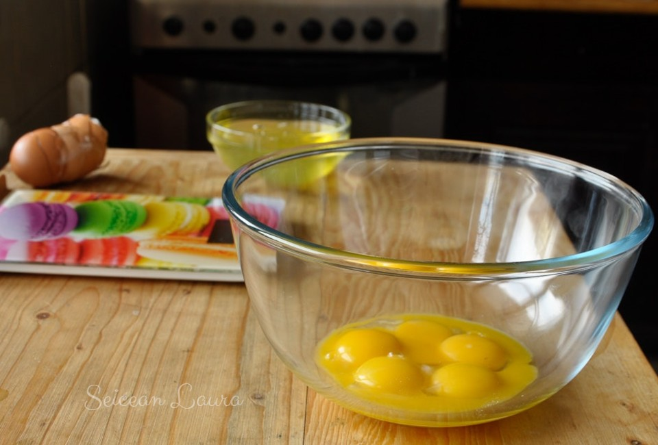
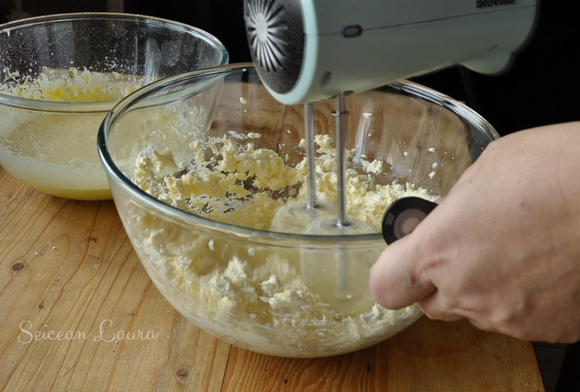
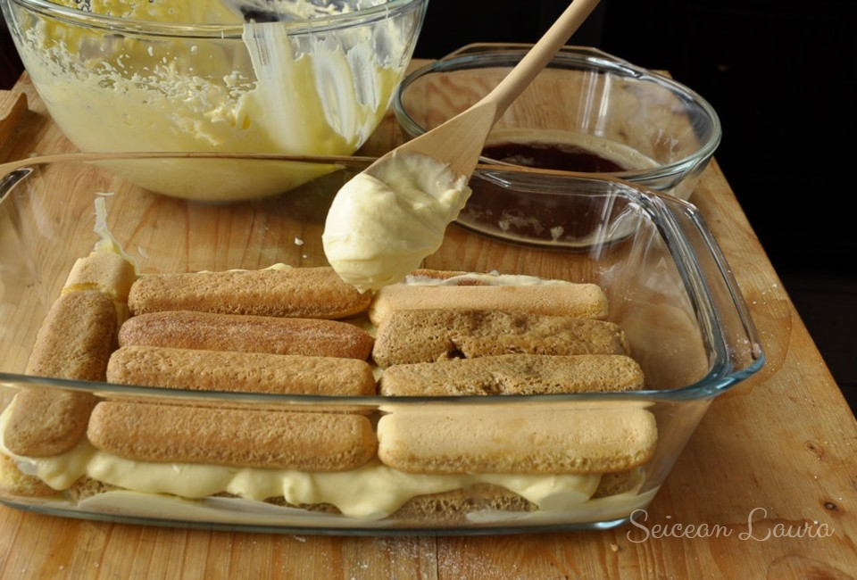
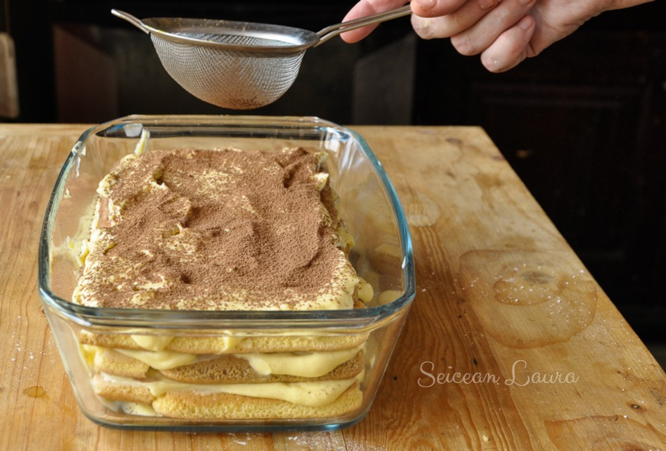

6 gălbenușuri provenind de la ouă foarte proaspete
500 gr. mascarpone
180 gr. zahăr pudră
40 ml. vin Marsala
200 ml cafea espresso rece
1 strop de sare
cacao pudră pentru ornate
Mod de preparare
Se sparg ouăle și se separă în două boluri diferite gălbenușurile de albușuri.

Se cântărește zahărul. Cântărim un gramaj inițial de 150 gr.
Se mixează gălbenușurile cu sarea, adăugându-se treptat zahărul pudră. Pregătirea
acestei creme fierte de gălbenușuri constă în baterea acestora cu zahărul pe abur
(bain-marie) până când amestecul atinge la o temperatură de maxim de 65°C și crema se îngroașă.
În alt bol, se pune mascarpone, asigurându-ne că este bine scurs de zer. Acest pas este important,
deoarece textura cremei de mascarpone influențează decisiv aspectul și gustul tortului Tiramisu.
E important, deci, să nu conțină umiditate în exces

Se mixează crema mascarpone ca să devină mai fluidă.
Se adaugă compoziția de gălbenușuri mixate cu zahăr peste mascarpone. Se adaugă și Marsala și se mixează până amestecul se omogenizează complet.
Din când în când opriți mixerul și cu ajutorul unei spatule flexibile, curățați pereții bolului pentru a integra în cremă eventuale resturi
de mascarpone lipite de margini.
Asamblare
Pentru asamblarea desertului Tiramisu, am folosit 35 de pișcoturi. Numărul acestora variază foarte mult
în funcție de forma în care se asamblează desertul și de înălțimea lui.
Se unge baza formei cu un strat subțire de cremă mascarpone.
Pișcoturile se înmoaie rapid în cafea și pe o parte și pe alta și se așează unul lângă altul în vas.
Peste stratul de savoiardi/pișcoturi punem un prim strat de cremă.

Se așează al doilea strat de savoiardi/pișcoturi înmuiați în cafea, peste care se întinde încă un strat de cremă.
Un al treilea strat de pișcoturi e opțional, în funcție de mărimea vasului și consistența cremei de mascarpone.
Se finalizează cu pudrarea printr-o sită de ceai a pudrei de cacao peste tortul Tiramisu.

Se acoperă ermetic cu o folie alimentară și se ține la frigider minim 2 ore, optim peste noapte.